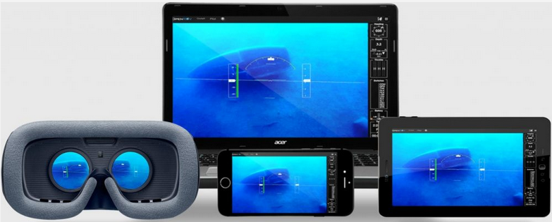

La motivación principal del análisis son los resultados de la Ronda Anual de Evaluación de 2018 del Sistema de Clasificación de Revistas Mexicanas de Ciencia y Tecnología en donde el puntaje de la versión electrónica de la Revista Cuicuilco obtuvo una calificación de 27.06 de una puntuación máxima de 68.29 puntos. Este resultado tiene las siguientes implicaciones en el ámbito institucional, académico y socia
